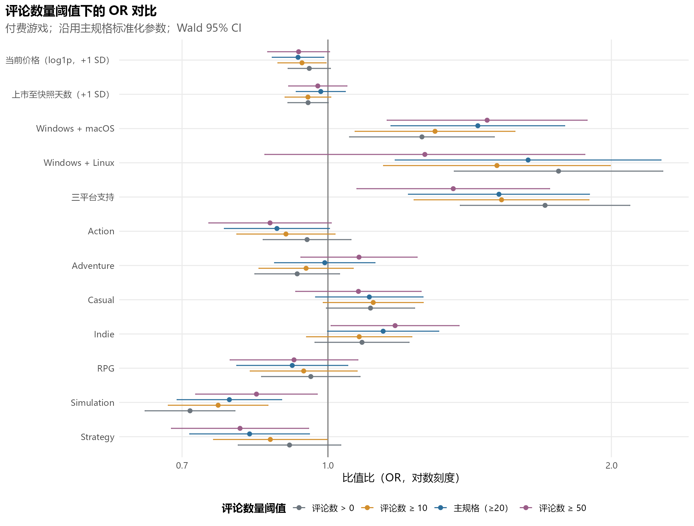
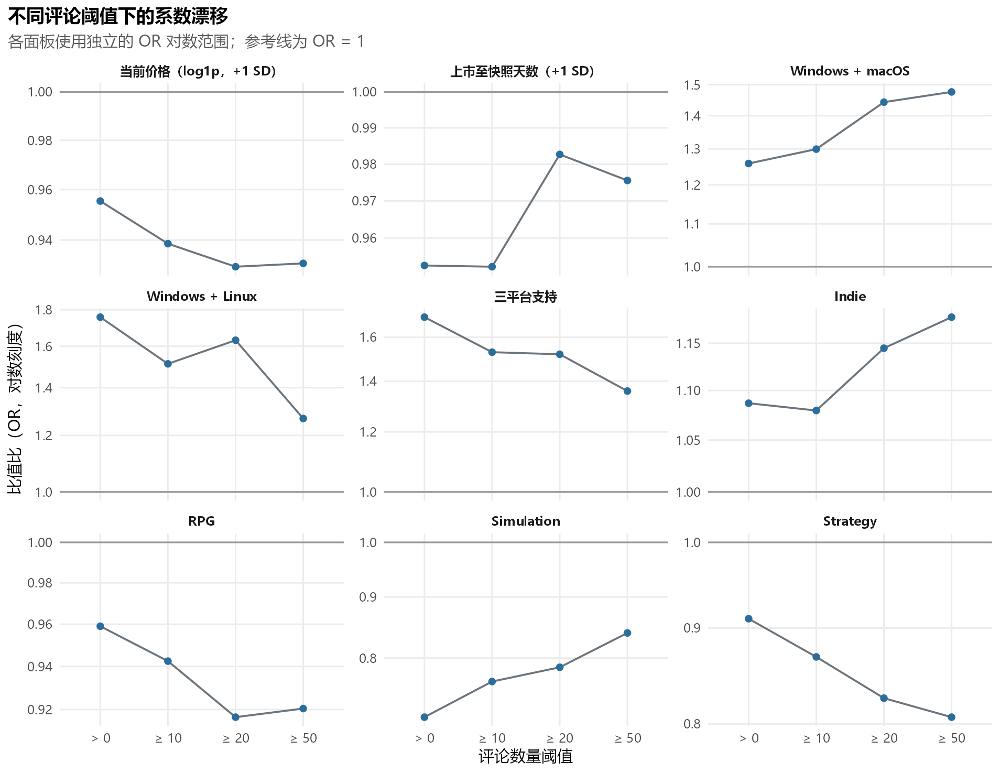
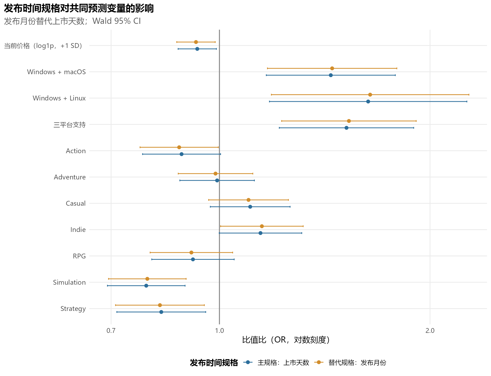
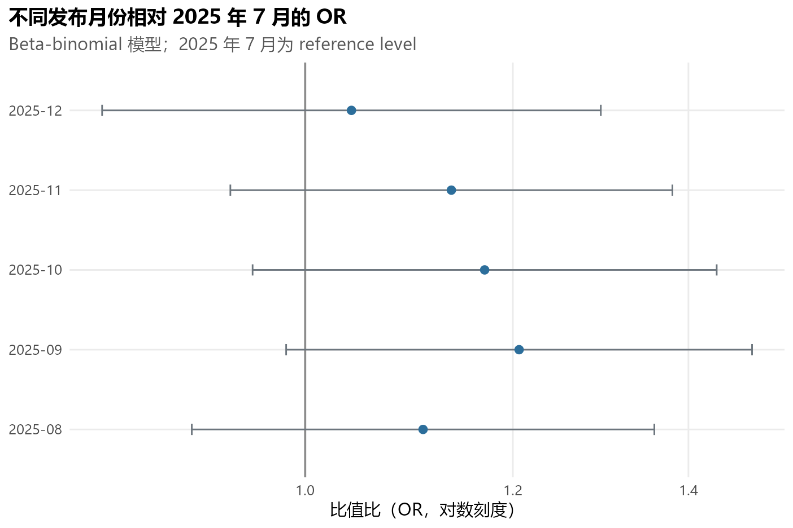
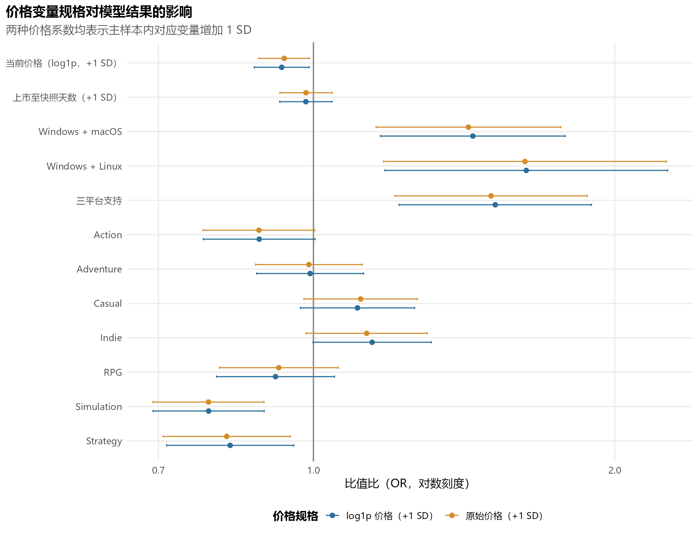
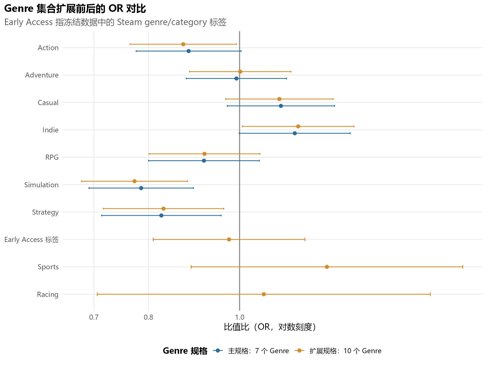
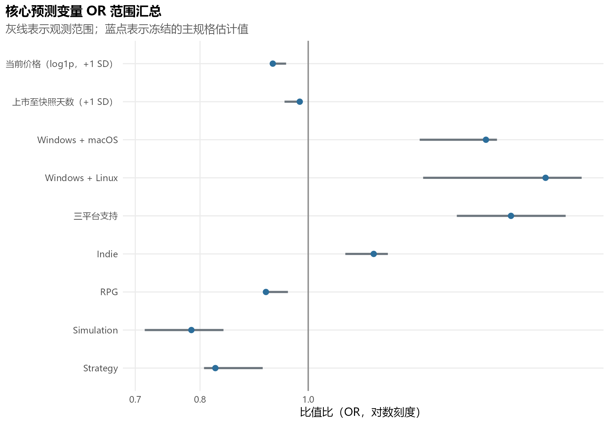
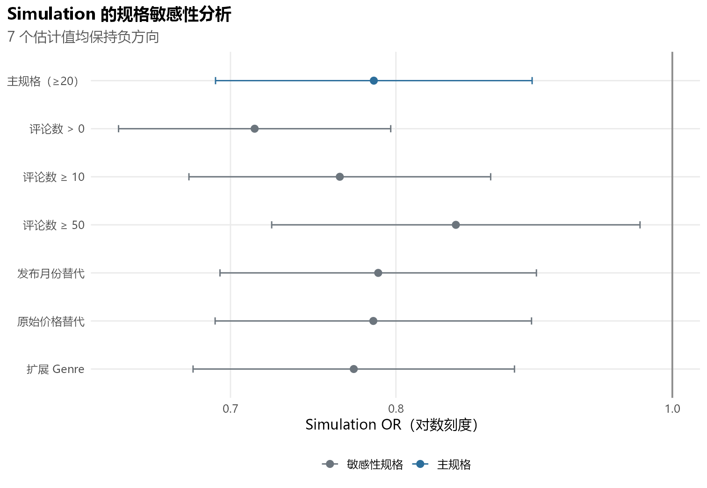
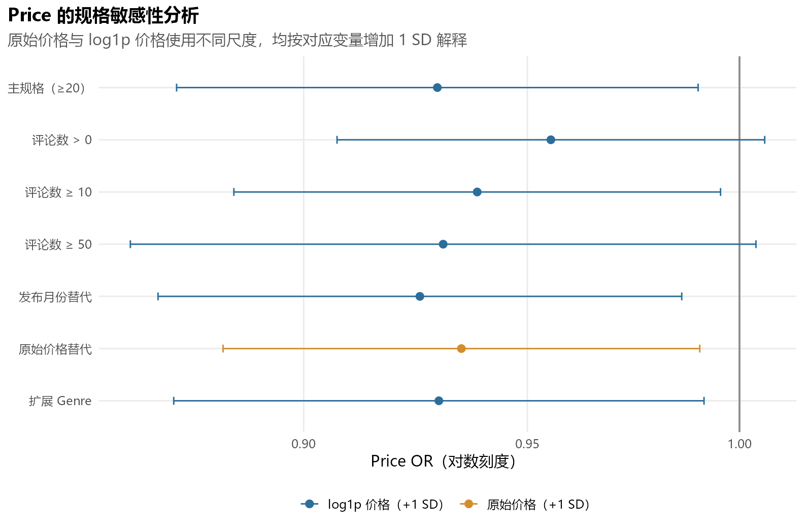

| 预测变量 | log odds | 标准误 | OR | 95% CI 下限 | 95% CI 上限 | CI 是否跨 1 |
|---|---|---|---|---|---|---|
| 截距 | 1.6485 | 0.0795 | 5.1994 | 4.4494 | 6.0759 | 否 |
| 当前价格（log1p，标准化） | -0.0730 | 0.0322 | 0.9296 | 0.8728 | 0.9901 | 否 |
| 上市至评论快照天数（标准化） | -0.0175 | 0.0306 | 0.9827 | 0.9255 | 1.0434 | 是 |
| Windows + macOS | 0.3665 | 0.1083 | 1.4427 | 1.1667 | 1.7840 | 否 |
| Windows + Linux | 0.4895 | 0.1658 | 1.6315 | 1.1789 | 2.2578 | 否 |
| 三平台支持 | 0.4182 | 0.1129 | 1.5192 | 1.2177 | 1.8954 | 否 |
| Action | -0.1247 | 0.0655 | 0.8828 | 0.7764 | 1.0037 | 是 |
| Adventure | -0.0077 | 0.0626 | 0.9923 | 0.8777 | 1.1219 | 是 |
| Casual | 0.1012 | 0.0670 | 1.1065 | 0.9704 | 1.2618 | 是 |
| Indie | 0.1351 | 0.0693 | 1.1446 | 0.9992 | 1.3112 | 是 |
| RPG | -0.0872 | 0.0692 | 0.9165 | 0.8002 | 1.0497 | 是 |
| Simulation | -0.2410 | 0.0652 | 0.7859 | 0.6916 | 0.8930 | 否 |
| Strategy | -0.1915 | 0.0746 | 0.8257 | 0.7133 | 0.9558 | 否 |
Step 5D 敏感性分析可视化审计
预先指定、单因素变更的 Beta-binomial 规格审计
1 Step 5D 分析目的
本报告审计冻结的主模型结论是否依赖四类预先指定的分析选择：评论数量阈值、发布时间表示、 价格变量变换和 Genre 集合。每个敏感性分析（sensitivity analysis）一次只改变一个规格， 其余设置均保持主规格不变。审计重点是方向、比值比（Odds Ratio, OR）幅度、 95% 置信区间（95% CI）及跨规格稳健性（robustness），不进行自动模型选择，也不作因果解释。
2 主模型规格回顾
主规格仍为 836 个评论数不少于 20 的付费游戏；响应变量是每个游戏的正面/负面评论分组计数， 平台 reference level 为 Windows only，价格与上市天数继续使用冻结的标准化参数，Genre 使用 Action、Adventure、Casual、Indie、RPG、Simulation 和 Strategy 七个指标。主规格的 Beta-binomial precision phi 为 8.7467， 组内相关 rho 为 0.1026。
3 评论数量阈值敏感性分析
主规格采用 total_reviews >= 20。其余 >0、>=10 和 >=50 仅作为预先指定的敏感性分析，不代表任何阈值“更优”。四个模型样本依次包含 2,206 / 1,127 / 836 / 548 个游戏，严格嵌套且均为付费游戏。>0 来源样本原有 2,207 个游戏，其中 1 个仅有两条评论的游戏缺少冻结价格变量，已明确记录为排除项； 所有阈值均沿用主规格的标准化参数。
| 评论阈值 | 来源游戏数 | 缺失预测变量排除数 | 模型 N | 正面评论 | 负面评论 | 总评论 | 汇总正面率（%） | 游戏层面正面率中位数（%） | 平均价格（美元） | 平均上市天数 |
|---|---|---|---|---|---|---|---|---|---|---|
| >0 | 2207 | 1 | 2206 | 949495 | 127109 | 1076604 | 88.1935 | 91.4707 | 8.4928 | 344.0091 |
| >=10 | 1127 | 0 | 1127 | 946624 | 126366 | 1072990 | 88.2230 | 88.2353 | 10.8544 | 346.6220 |
| >=20 (Primary) | 836 | 0 | 836 | 943294 | 125730 | 1069024 | 88.2388 | 87.6504 | 11.5726 | 347.3038 |
| >=50 | 548 | 0 | 548 | 935666 | 124209 | 1059875 | 88.2808 | 86.9918 | 13.1780 | 347.0876 |
| 模型规格 | N | logLik | AIC | BIC | phi | rho | 收敛 | Hessian 为正定 | 最大绝对梯度 | 警告数 |
|---|---|---|---|---|---|---|---|---|---|---|
| 评论数 > 0 | 2206 | -5087.234 | 10202.468 | 10282.254 | 6.53558 | 0.13270 | 是 | 是 | 0.00323 | 0 |
| 评论数 ≥ 10 | 1127 | -3977.202 | 7982.404 | 8052.786 | 7.80239 | 0.11361 | 是 | 是 | 0.00200 | 0 |
| 主规格（评论数 ≥ 20） | 836 | -3395.153 | 6818.306 | 6884.507 | 8.74673 | 0.10260 | 是 | 是 | 0.00250 | 0 |
| 评论数 ≥ 50 | 548 | -2637.498 | 5302.996 | 5363.284 | 9.40182 | 0.09614 | 是 | 是 | 0.00201 | 0 |

人工审计重点
- 是否存在预测变量方向反转？
- 是否有某一个评论阈值明显偏离其他规格？
- 哪些 95% CI 从不跨 1 变为跨 1，或反向变化？
| 评论阈值 | 预测变量 | OR | 95% CI 下限 | 95% CI 上限 | CI 是否跨 1 | |
|---|---|---|---|---|---|---|
| 2 | >=20 (Primary) | 当前价格（log1p，标准化） | 0.9296 | 0.8728 | 0.9901 | 否 |
| 3 | >=20 (Primary) | 上市至评论快照天数（标准化） | 0.9827 | 0.9255 | 1.0434 | 是 |
| 4 | >=20 (Primary) | Windows + macOS | 1.4427 | 1.1667 | 1.7840 | 否 |
| 5 | >=20 (Primary) | Windows + Linux | 1.6315 | 1.1789 | 2.2578 | 否 |
| 6 | >=20 (Primary) | 三平台支持 | 1.5192 | 1.2177 | 1.8954 | 否 |
| 10 | >=20 (Primary) | Indie | 1.1446 | 0.9992 | 1.3112 | 是 |
| 11 | >=20 (Primary) | RPG | 0.9165 | 0.8002 | 1.0497 | 是 |
| 12 | >=20 (Primary) | Simulation | 0.7859 | 0.6916 | 0.8930 | 否 |
| 13 | >=20 (Primary) | Strategy | 0.8257 | 0.7133 | 0.9558 | 否 |
| 15 | >0 | 当前价格（log1p，标准化） | 0.9554 | 0.9073 | 1.0061 | 是 |
| 16 | >0 | 上市至评论快照天数（标准化） | 0.9527 | 0.9069 | 1.0008 | 是 |
| 17 | >0 | Windows + macOS | 1.2585 | 1.0544 | 1.5021 | 否 |
| 18 | >0 | Windows + Linux | 1.7575 | 1.3621 | 2.2677 | 否 |
| 19 | >0 | 三平台支持 | 1.7006 | 1.3823 | 2.0921 | 否 |
| 23 | >0 | Indie | 1.0869 | 0.9689 | 1.2194 | 是 |
| 24 | >0 | RPG | 0.9590 | 0.8503 | 1.0817 | 是 |
| 25 | >0 | Simulation | 0.7138 | 0.6395 | 0.7967 | 否 |
| 26 | >0 | Strategy | 0.9104 | 0.8031 | 1.0320 | 是 |
| 28 | >=10 | 当前价格（log1p，标准化） | 0.9386 | 0.8849 | 0.9954 | 否 |
| 29 | >=10 | 上市至评论快照天数（标准化） | 0.9523 | 0.9005 | 1.0071 | 是 |
| 30 | >=10 | Windows + macOS | 1.2994 | 1.0688 | 1.5798 | 否 |
| 31 | >=10 | Windows + Linux | 1.5117 | 1.1457 | 1.9947 | 否 |
| 32 | >=10 | 三平台支持 | 1.5289 | 1.2346 | 1.8933 | 否 |
| 36 | >=10 | Indie | 1.0795 | 0.9492 | 1.2278 | 是 |
| 37 | >=10 | RPG | 0.9425 | 0.8270 | 1.0741 | 是 |
| 38 | >=10 | Simulation | 0.7646 | 0.6769 | 0.8636 | 否 |
| 39 | >=10 | Strategy | 0.8687 | 0.7561 | 0.9980 | 否 |
| 41 | >=50 | 当前价格（log1p，标准化） | 0.9309 | 0.8631 | 1.0040 | 是 |
| 42 | >=50 | 上市至评论快照天数（标准化） | 0.9756 | 0.9085 | 1.0476 | 是 |
| 43 | >=50 | Windows + macOS | 1.4759 | 1.1559 | 1.8847 | 否 |
| 44 | >=50 | Windows + Linux | 1.2674 | 0.8571 | 1.8742 | 是 |
| 45 | >=50 | 三平台支持 | 1.3586 | 1.0735 | 1.7195 | 否 |
| 49 | >=50 | Indie | 1.1785 | 1.0078 | 1.3781 | 否 |
| 50 | >=50 | RPG | 0.9205 | 0.7874 | 1.0760 | 是 |
| 51 | >=50 | Simulation | 0.8397 | 0.7237 | 0.9743 | 否 |
| 52 | >=50 | Strategy | 0.8066 | 0.6821 | 0.9539 | 否 |

人工审计重点
- OR 是否随阈值收紧而呈单调变化？
- 即使方向未反转，OR 幅度是否变化到足以影响实质解释？
4 发布时间规格敏感性分析
主规格使用标准化的 days_since_release，替代规格使用分类变量 release_month， 并以 2025 年 7 月为 reference level。两者高度相关，因此不会同时进入同一个模型。 替代规格 AIC 为 6822.202，主规格为 6818.306。 两者使用相同样本，允许谨慎比较 AIC，但该比较不会自动改变冻结的主规格。
| 预测变量 | 主规格 OR | 替代规格 OR | 95% CI 下限 | 95% CI 上限 | OR 变化（%） | 方向变化 | CI 跨 1 状态变化 | |
|---|---|---|---|---|---|---|---|---|
| 2 | 当前价格（log1p，标准化） | 0.9296 | 0.9256 | 0.8689 | 0.9861 | 0.4217 | 否 | 否 |
| 8 | Windows + macOS | 1.4427 | 1.4491 | 1.1711 | 1.7930 | 0.4398 | 否 | 否 |
| 9 | Windows + Linux | 1.6315 | 1.6422 | 1.1863 | 2.2732 | 0.6539 | 否 | 否 |
| 10 | 三平台支持 | 1.5192 | 1.5314 | 1.2272 | 1.9110 | 0.8016 | 否 | 否 |
| 11 | Action | 0.8828 | 0.8758 | 0.7699 | 0.9962 | 0.7900 | 否 | 是 |
| 12 | Adventure | 0.9923 | 0.9871 | 0.8731 | 1.1161 | 0.5230 | 否 | 否 |
| 13 | Casual | 1.1065 | 1.1005 | 0.9650 | 1.2549 | 0.5470 | 否 | 否 |
| 14 | Indie | 1.1446 | 1.1499 | 1.0037 | 1.3173 | 0.4571 | 否 | 是 |
| 15 | RPG | 0.9165 | 0.9118 | 0.7960 | 1.0444 | 0.5168 | 否 | 否 |
| 16 | Simulation | 0.7859 | 0.7887 | 0.6941 | 0.8961 | 0.3540 | 否 | 否 |
| 17 | Strategy | 0.8257 | 0.8221 | 0.7103 | 0.9515 | 0.4377 | 否 | 否 |

人工审计重点
- 替换时间变量后，Price、Platform、Simulation、Strategy、Indie 和 RPG 是否稳定？
- 共同预测变量的 95% CI 与 OR=1 的关系是否变化？
| 发布月份 | log odds | 标准误 | OR | 95% CI 下限 | 95% CI 上限 | CI 是否跨 1 | CI 方法 |
|---|---|---|---|---|---|---|---|
| 2025-07 | 0.0000 | NA | 1.0000 | 1.0000 | 1.0000 | 是 | reference level |
| 2025-08 | 0.1035 | 0.1036 | 1.1090 | 0.9053 | 1.3587 | 是 | Wald normal |
| 2025-09 | 0.1878 | 0.1043 | 1.2066 | 0.9834 | 1.4804 | 是 | Wald normal |
| 2025-10 | 0.1576 | 0.1039 | 1.1707 | 0.9549 | 1.4352 | 是 | Wald normal |
| 2025-11 | 0.1284 | 0.0990 | 1.1370 | 0.9364 | 1.3804 | 是 | Wald normal |
| 2025-12 | 0.0406 | 0.1117 | 1.0415 | 0.8367 | 1.2963 | 是 | Wald normal |

人工审计重点
- 是否有任一月份与 2025 年 7 月明显分离？
- 月份估计的区间宽度是否显示较大的不确定性？
各月份 95% CI 均跨 1；days_since_release 在不同规格中的关联也较弱。 因此发布时间主要作为时间暴露或队列控制变量，而不是主要研究发现。
5 价格规格敏感性分析
主规格使用标准化的 log1p(current_price_usd)，替代规格使用标准化的原始 current_price_usd。两种 OR 都按对应变量增加 1 个标准差解释，不能直接理解为价格每增加 1 美元。 原始美元尺度与 log1p 尺度代表不同的价格变化，因此重点比较方向、幅度及其他系数的稳定性。
| 模型规格 | 价格对比尺度 | 基准预测概率 | +1 SD 预测概率 | 预测概率绝对变化 |
|---|---|---|---|---|
| 主规格（评论数 ≥ 20） | per +1 SD log1p price | 0.83869 | 0.82857 | -0.01013 |
| 原始价格替代规格 | per +1 primary-sample SD raw price | 0.83990 | 0.83065 | -0.00925 |
| 预测变量 | 主规格 OR | 替代规格 OR | 95% CI 下限 | 95% CI 上限 | OR 变化（%） | 方向变化 | CI 跨 1 状态变化 | |
|---|---|---|---|---|---|---|---|---|
| 2 | 当前价格（log1p，标准化） | 0.9296 | 0.9350 | 0.8826 | 0.9904 | 0.5829 | 否 | 否 |
| 3 | 上市至评论快照天数（标准化） | 0.9827 | 0.9830 | 0.9258 | 1.0439 | 0.0361 | 否 | 否 |
| 4 | Windows + macOS | 1.4427 | 1.4282 | 1.1549 | 1.7662 | 1.0083 | 否 | 否 |
| 5 | Windows + Linux | 1.6315 | 1.6267 | 1.1752 | 2.2516 | 0.2956 | 否 | 否 |
| 6 | 三平台支持 | 1.5192 | 1.5046 | 1.2060 | 1.8772 | 0.9592 | 否 | 否 |
| 7 | Action | 0.8828 | 0.8822 | 0.7759 | 1.0031 | 0.0662 | 否 | 否 |
| 8 | Adventure | 0.9923 | 0.9896 | 0.8754 | 1.1187 | 0.2722 | 否 | 否 |
| 9 | Casual | 1.1065 | 1.1148 | 0.9785 | 1.2700 | 0.7439 | 否 | 否 |
| 10 | Indie | 1.1446 | 1.1302 | 0.9833 | 1.2992 | 1.2579 | 否 | 否 |
| 11 | RPG | 0.9165 | 0.9234 | 0.8056 | 1.0584 | 0.7520 | 否 | 否 |
| 12 | Simulation | 0.7859 | 0.7856 | 0.6914 | 0.8926 | 0.0405 | 否 | 否 |
| 13 | Strategy | 0.8257 | 0.8192 | 0.7080 | 0.9478 | 0.7925 | 否 | 否 |

人工审计重点
- 更换价格变换后，Price 的方向或 CI 结论是否变化？
- 其他预测变量的漂移是否大于 Price 本身的变化？
Price 在全部 7 个相关规格中均保持负方向，总体 OR 范围为 0.926–0.955， 最大 OR 漂移为 2.78%。关联幅度较小但稳定。 需要注意，当前价格是采集时点美国 Steam storefront 的快照价格，不是 launch price， 也不是评论者实际支付的价格。
6 Genre 规格敏感性分析
主模型 Genre 为 Action、Adventure、Casual、Indie、RPG、Simulation 和 Strategy； 扩展规格仅额外加入 Early Access、Sports 和 Racing。此处 Early Access 是冻结数据中的 Steam genre/category 标签，不代表历史 Early Access 状态或发行时状态。Sports 与 Racing 样本较稀疏，因此应优先审计 CI 宽度及其对原七个 Genre 系数的影响，不应仅依据单个 p 值作结论。
| Genre | 主规格 OR | 扩展规格 OR | 95% CI 下限 | 95% CI 上限 | OR 变化（%） | 方向变化 | |
|---|---|---|---|---|---|---|---|
| 7 | Action | 0.8828 | 0.8713 | 0.7650 | 0.9924 | 1.2999 | 否 |
| 8 | Adventure | 0.9923 | 1.0015 | 0.8845 | 1.1340 | 0.9258 | 是 |
| 9 | Casual | 1.1065 | 1.1024 | 0.9664 | 1.2574 | 0.3757 | 否 |
| 10 | Indie | 1.1446 | 1.1543 | 1.0068 | 1.3233 | 0.8434 | 否 |
| 11 | RPG | 0.9165 | 0.9177 | 0.8012 | 1.0511 | 0.1278 | 否 |
| 12 | Simulation | 0.7859 | 0.7733 | 0.6792 | 0.8804 | 1.6059 | 否 |
| 13 | Strategy | 0.8257 | 0.8302 | 0.7165 | 0.9619 | 0.5412 | 否 |
| 新增 Genre | 游戏数 | 正面评论 | 负面评论 | OR | 95% CI 下限 | 95% CI 上限 | CI 是否跨 1 | |
|---|---|---|---|---|---|---|---|---|
| 14 | Early Access | 93 | 66807 | 13227 | 0.9746 | 0.8094 | 1.1735 | 是 |
| 15 | Sports | 31 | 29975 | 4599 | 1.2384 | 0.8881 | 1.7269 | 是 |
| 16 | Racing | 20 | 22794 | 2013 | 1.0611 | 0.7059 | 1.5950 | 是 |

人工审计重点
- 原七个 Genre 的 OR 是否在扩展后出现明显漂移？
- Sports 与 Racing 的 CI 是否过宽，因而不足以支持精确的方向判断？
7 各预测变量稳健性汇总
描述性分类规则保持不变：ROBUST（稳健）表示方向不变且最大 OR 漂移不超过 10%； PARTIAL（部分稳健、存在一定规格敏感性）表示方向不变且漂移大于 10% 但不超过 25%； SENSITIVE（对规格敏感）表示方向反转或漂移超过 25%。这些仅是人工审计规则，不是统计检验。
| 预测变量 | 可用规格数 | 最小 OR | 主规格 OR | 最大 OR | 同方向规格数 | CI 不跨 1 | CI 跨 1 | 最大漂移（%） | 稳健性分类 |
|---|---|---|---|---|---|---|---|---|---|
| Indie | 7 | 1.0795 | 1.1446 | 1.1785 | 7 | 3 | 4 | 5.6888 | ROBUST（稳健） |
| RPG | 7 | 0.9118 | 0.9165 | 0.9590 | 7 | 0 | 7 | 4.6400 | ROBUST（稳健） |
| Simulation | 7 | 0.7138 | 0.7859 | 0.8397 | 7 | 7 | 0 | 9.1719 | ROBUST（稳健） |
| Strategy | 7 | 0.8066 | 0.8257 | 0.9104 | 7 | 6 | 1 | 10.2562 | PARTIAL（部分稳健） |
| Windows + Linux | 7 | 1.2674 | 1.6315 | 1.7575 | 7 | 6 | 1 | 22.3158 | PARTIAL（部分稳健） |
| Windows + macOS | 7 | 1.2585 | 1.4427 | 1.4759 | 7 | 7 | 0 | 12.7698 | PARTIAL（部分稳健） |
| 三平台支持 | 7 | 1.3586 | 1.5192 | 1.7006 | 7 | 7 | 0 | 11.9371 | PARTIAL（部分稳健） |
| 上市至评论快照天数（标准化） | 6 | 0.9523 | 0.9827 | 0.9830 | 6 | 0 | 6 | 3.0896 | ROBUST（稳健） |
| 当前价格（log1p，标准化） | 7 | 0.9256 | 0.9296 | 0.9554 | 7 | 5 | 2 | 2.7824 | ROBUST（稳健） |

人工审计重点
- 较窄的 OR 范围是否掩盖了多个跨 1 的 CI？
- 哪个 Platform contrast 在方向不变时出现了最大的幅度漂移？
8 Simulation（模拟类）深入审计
Step 5C Beta-binomial 主规格的 Simulation OR 为 0.786。Step 5D 各规格范围为 0.714–0.840， 7/7 个规格均保持负方向，且 7/7 个 CI 均不跨 1。Simulation 是当前最稳定的 Genre 关联之一，但这一结果仍是条件关联，不应解释为因果关系。

人工审计重点
- Simulation 是否在全部规格中保持 OR < 1？
- 评论数 > 0 的估计是否是孤立偏离，还是与其他规格形成连续变化？
9 Price 深入审计

人工审计重点
- Price 是否在每个相关模型中保持负方向？
- 哪些规格的 CI 扩大到跨越 OR=1？
10 Platform（平台）深入审计
三个 Platform contrast 在全部 7 个规格中均保持正方向，但 OR 幅度随评论数量阈值出现一定变化， 因此应描述为“方向稳定、幅度部分敏感”，而不是笼统称为 Platform 稳健。所有解释均相对于 Windows only。
| Platform contrast | 最小 OR | 主规格 OR | 最大 OR | 同方向规格数 | CI 不跨 1 | 最大漂移（%） | 稳健性分类 | |
|---|---|---|---|---|---|---|---|---|
| 5 | Windows + Linux | 1.2674 | 1.6315 | 1.7575 | 7 | 6 | 22.3158 | PARTIAL（部分稳健） |
| 6 | Windows + macOS | 1.2585 | 1.4427 | 1.4759 | 7 | 7 | 12.7698 | PARTIAL（部分稳健） |
| 7 | 三平台支持 | 1.3586 | 1.5192 | 1.7006 | 7 | 7 | 11.9371 | PARTIAL（部分稳健） |
11 总体稳健性矩阵

人工审计重点
- 每一行的方向模式是否一致？
- 是否有单一规格产生异常大的幅度变化？
| 预测变量 | 主规格 | 评论数 > 0 | 评论数 ≥ 10 | 评论数 ≥ 50 | 发布月份替代 | 原始价格替代 | 扩展 Genre |
|---|---|---|---|---|---|---|---|
| 当前价格（log1p，标准化） | - | - | - | - | - | - | - |
| 上市至评论快照天数（标准化） | - | - | - | - | - | - | |
| Windows + macOS | + | + | + | + | + | + | + |
| Windows + Linux | + | + | + | + | + | + | + |
| 三平台支持 | + | + | + | + | + | + | + |
| Indie | + | + | + | + | + | + | + |
| RPG | - | - | - | - | - | - | - |
| Simulation | - | - | - | - | - | - | - |
| Strategy | - | - | - | - | - | - | - |
12 模型诊断
只有 convergence code 为 0 且 Hessian 为正定的模型才可解释系数。以下表格同时展示最大梯度、 优化器信息、phi、rho、边界检查、样本一致性及 AIC 可比范围。7 个模型全部满足收敛要求； 最大绝对梯度为 0.006996， 捕获到的模型拟合警告数为 0。
| 模型规格 | N | 收敛代码 | 收敛 | Hessian 为正定 | 最大绝对梯度 | 优化器信息 | 警告数 | phi | rho | 离散参数边界标记 | 极端估计/标准误数 | 与主规格同样本 | AIC 可比 | 相对主规格 ΔAIC |
|---|---|---|---|---|---|---|---|---|---|---|---|---|---|---|
| 主规格（评论数 ≥ 20） | 836 | 0 | 是 | 是 | 0.00250 | relative convergence (4) | 0 | 8.74673 | 0.10260 | 否 | 0 | 是 | 是 | 0.00000 |
| 评论数 > 0 | 2206 | 0 | 是 | 是 | 0.00323 | relative convergence (4) | 0 | 6.53558 | 0.13270 | 否 | 0 | 否 | 否 | NA |
| 评论数 ≥ 10 | 1127 | 0 | 是 | 是 | 0.00200 | relative convergence (4) | 0 | 7.80239 | 0.11361 | 否 | 0 | 否 | 否 | NA |
| 评论数 ≥ 50 | 548 | 0 | 是 | 是 | 0.00201 | relative convergence (4) | 0 | 9.40182 | 0.09614 | 否 | 0 | 否 | 否 | NA |
| 发布月份替代规格 | 836 | 0 | 是 | 是 | 0.00700 | relative convergence (4) | 0 | 8.80782 | 0.10196 | 否 | 0 | 是 | 是 | 3.89561 |
| 原始价格替代规格 | 836 | 0 | 是 | 是 | 0.00160 | relative convergence (4) | 0 | 8.73900 | 0.10268 | 否 | 0 | 是 | 是 | 0.10606 |
| 扩展 Genre 规格 | 836 | 0 | 是 | 是 | 0.00699 | relative convergence (4) | 0 | 8.76938 | 0.10236 | 否 | 0 | 是 | 是 | 3.91957 |
| 模型规格 | 状态 | 警告数 | 警告内容 |
|---|---|---|---|
| 主规格（评论数 ≥ 20） | 无警告 | 0 | NA |
| 评论数 > 0 | 无警告 | 0 | NA |
| 评论数 ≥ 10 | 无警告 | 0 | NA |
| 评论数 ≥ 50 | 无警告 | 0 | NA |
| 发布月份替代规格 | 无警告 | 0 | NA |
| 原始价格替代规格 | 无警告 | 0 | NA |
| 扩展 Genre 规格 | 无警告 | 0 | NA |
13 人工审计清单
- 确认 7 个模型均通过收敛、Hessian 与警告检查后再解释系数。
- 将评论阈值变化视为总体选择敏感性，不进行跨样本 AIC 竞赛。
- 确认发布月份替代而不是补充上市天数，两者未同时进入模型。
- 原始价格与 log1p 价格只能按各自增加 1 SD 的对比解释。
- 将 Early Access 视为 Steam genre/category 标签，并重点检查稀疏的 Sports、Racing CI。
- 先审计方向和幅度，再看 CI crossing 状态，最后才看 p 值。
- 检查结论是否仅依赖单一规格；不得由本报告自动修改冻结主模型。
14 阶段性结论
- Price：ROBUST（稳健）。7/7 个规格保持负方向，OR 范围 0.926–0.955。
- Platforms：PARTIAL（部分稳健）。三个 contrast 均保持正方向，但幅度对评论阈值存在一定敏感性。
- Indie：ROBUST（稳健）。7/7 个规格保持正方向，最大 OR 漂移 5.69%。
- RPG：ROBUST（方向与幅度稳健）。OR 范围 0.912–0.959， 但全部 7 个规格的 CI 均跨 1；这里的“稳健”不代表强统计证据。
- Simulation：ROBUST（稳健）。7/7 个规格保持负方向，OR 范围 0.714–0.840。
- Strategy：PARTIAL（部分稳健）。方向保持为负，但最大 OR 漂移 10.26%。
- 发布时间不作为 headline result：上市天数关联较弱，发布月份替代规格的各月份 CI 均跨 1。
方向稳定可以与 CI 跨 1 同时存在，PARTIAL 也可以与方向完全一致同时存在。 冻结的主规格继续作为审计基准；本报告不作因果推断、不自动修改模型，也不启动后续建模阶段。